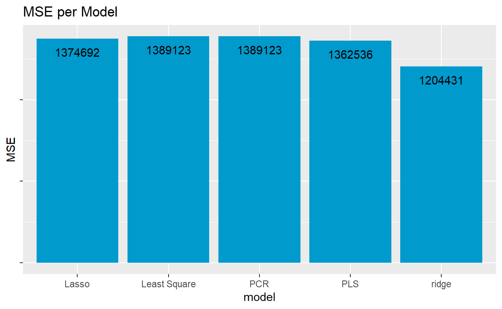

,
ISLR Ch. 6 Exercise 9e and update 9g (assigned for HW 2)
looking back at your HW 2 answers for context
A
Split the data set into a training set and a test set.
[1] 777B
Fit a linear model using least squares on the training set, and report the test error obtained.
attach(College)
lm.fit <- lm(Apps ~., data = College, subset = train)
lm.pred <- predict(lm.fit, College.test, type = "response")
lm_mse <- mean((College.response -lm.pred )^2)
paste("The Test Error for Least squares is :", lm_mse)
[1] "The Test Error for Least squares is : 1389123.27022729"MSE_dataframe <- data.frame("model" = "Least Square", "MSE" = lm_mse)
C
Fit a ridge regression model on the training set, with λ chosen by cross-validation. Report the test error obtained.
library(glmnet)
x <- model.matrix(Apps~.,College)[,-1]
y <- College$Apps
grid <- 10^seq(10,-2, length = 100)
ridge.mod <- glmnet(x[train,], y[train], alpha =0, lambda = grid )
cv.out <- cv.glmnet(x[train,], y[train],alpha = 0)
plot(cv.out)
lamda_best <- cv.out$lambda.min
paste("The minimum lambda: ",lamda_best)
[1] "The minimum lambda: 364.338366117653"ridge.pred <- predict(ridge.mod, s = lamda_best, newx = x[-train,])
ridge_mse <- mean((ridge.pred - y[-train])^2)
MSE_dataframe <- rbind(MSE_dataframe, c("ridge",ridge_mse))
paste("The test Error Rate is : ", mean((ridge.pred - y[-train])^2))
[1] "The test Error Rate is : 1204431.39092091"D
Fit a lasso model on the training set, with λ chosen by crossvalidation. Report the test error obtained, along with the number of non-zero coefficient estimates.
lasso.mod <- glmnet(x[train,],y[train],alpha = 1, lambda = grid)
cv.out <- cv.glmnet(x[train,], y[train], alpha = 1)
plot(cv.out)
lamda_best <- cv.out$lambda.min
lamda_best
[1] 2.133937lasso.pred <- predict(lasso.mod, s= lamda_best, newx = x[-train,])
paste("The test error rate is ",mean((lasso.pred - y[-train])^2))
[1] "The test error rate is 1374692.34765744"lasso_mse <- mean((lasso.pred - y[-train])^2)
out <- glmnet(x,y, alpha = 1 ,lambda = grid)
lamda.coef <- predict(out, type = "coefficients", s= lamda_best)[1:18,]
paste("The number of non-zero coeficients:",lamda.coef[lamda.coef !=0] %>% length())
[1] "The number of non-zero coeficients: 18"None of the coefficients are zero.
E
Fit a PCR model on the training set, with M chosen by crossvalidation. Report the test error obtained, along with the value of M selected by cross-validation.
library(pls)
set.seed(10)
pcr.fit <- pcr(Apps ~ . , data = College, subset = train, scale = TRUE, validation = "CV")
validationplot(pcr.fit, val.type = "MSEP")
pcr.pred <- predict(pcr.fit,College.test, ncomp = 17)
pcr_mse<- mean((pcr.pred - College.response)^2)
paste("The MSE error is ", pcr_mse)
[1] "The MSE error is 1389123.27022729"summary(pcr.fit)
Data: X dimension: 583 17
Y dimension: 583 1
Fit method: svdpc
Number of components considered: 17
VALIDATION: RMSEP
Cross-validated using 10 random segments.
(Intercept) 1 comps 2 comps 3 comps 4 comps 5 comps
CV 3859 3788 2101 2110 1777 1665
adjCV 3859 3788 2096 2107 1760 1648
6 comps 7 comps 8 comps 9 comps 10 comps 11 comps
CV 1659 1657 1612 1553 1550 1554
adjCV 1653 1652 1603 1548 1545 1549
12 comps 13 comps 14 comps 15 comps 16 comps 17 comps
CV 1559 1565 1569 1509 1203 1141
adjCV 1555 1561 1565 1494 1192 1132
TRAINING: % variance explained
1 comps 2 comps 3 comps 4 comps 5 comps 6 comps 7 comps
X 32.234 57.24 64.47 70.25 75.57 80.51 84.26
Apps 5.038 71.82 71.83 80.10 82.98 83.03 83.15
8 comps 9 comps 10 comps 11 comps 12 comps 13 comps
X 87.58 90.56 92.82 94.93 96.73 97.81
Apps 84.46 84.98 85.20 85.20 85.20 85.34
14 comps 15 comps 16 comps 17 comps
X 98.69 99.35 99.82 100.00
Apps 85.44 89.94 92.83 93.36From the validation plot, the lowest MSEP for the number of components is around 16,17, and 18.I decided to use 17 as my value of M.
F
Fit a PLS model on the training set, with M chosen by crossvalidation. Report the test error obtained, along with the value of M selected by cross-validation.
pls.fit <- plsr(Apps~., data = College, subset = train, scale = TRUE, validation = "CV")
validationplot(pls.fit, val.type = "MSEP")

pls.pred_7<- predict(pls.fit, College.test, ncomp = 7)
pls.pred_8 <- predict(pls.fit, College.test, ncomp = 8)
paste("The MSE error using M as 7: ", mean((pls.pred_7- College.response)^2))
[1] "The MSE error using M as 7: 1336641.93400001"[1] "The MSE error using M as 8: 1362535.73332994"The lowest msep was with the number of components ranging from 7 and greater. For the comparison bar chart, I used the msep of 8.
G
Comment on the results obtained. How accurately can we predict the number of college applications received? Is there much difference among the test errors resulting from these five approaches?
| model | MSE |
|---|---|
| ridge | 1204431.39092091 |
| PLS | 1362535.73332994 |
| Lasso | 1374692.34765744 |
| Least Square | 1389123.27022729 |
| PCR | 1389123.27022729 |
MSE_dataframe$MSE <- as.numeric(MSE_dataframe$MSE)
MSE_dataframe %>% ggplot2::ggplot(aes(x = model, y = MSE)) + geom_col(fill = "deepskyblue3")+ theme(axis.text.y = element_blank())+labs(title = "MSE per Model")+geom_text(aes(label = round(as.numeric(MSE),0)), vjust = 2)

The Ridge regression model had the lowest MSE, with PLS coming up the second lowest MSE, following Lasso and the PCR and Least square in last. There is not too much of a difference between the MSEâs, except for the ridge model.
ISLR Ch. 12, Exercise 8
In Section 12.2.3, a formula for calculating PVE was given in Equation 12.10. We also saw that the PVE can be obtained using the sdev output of the prcomp() function. On the USArrests data, calculate PVE in two ways:
- Using the sdev output of the prcomp() function, as was done in Section 12.2.3.
pr.out <- prcomp(USArrests, scale = TRUE)
pr.var <- pr.out$sdev^2
pve<- pr.var/sum(pr.var)
x<- (pve %>% round(3))
cat("PVE using Prcomp: ",x)
PVE using Prcomp: 0.62 0.247 0.089 0.043- By applying Equation 12.10 directly. That is, use the prcomp() function to compute the principal component loadings. Then, use those loadings in Equation 12.10 to obtain the PVE. These two approaches should give the same results.

loadings <- pr.out$rotation
loadings
PC1 PC2 PC3 PC4
Murder -0.5358995 0.4181809 -0.3412327 0.64922780
Assault -0.5831836 0.1879856 -0.2681484 -0.74340748
UrbanPop -0.2781909 -0.8728062 -0.3780158 0.13387773
Rape -0.5434321 -0.1673186 0.8177779 0.08902432## Need scaled and matrix version of USArrests
US_mat_scale <- data.matrix(scale(USArrests))
## Getting sum of Sum of squared coefficients in matrix
sum_sq <- sum(apply(US_mat_scale^2,2,sum))
### Top side of 12.10 loadings * matrix coefficients
top_eq <- apply((US_mat_scale %*% loadings)^2,2,sum)
cat("PVE using the 12.10 equation: ",top_eq/sum_sq)
PVE using the 12.10 equation: 0.6200604 0.2474413 0.0891408 0.04335752At first for the sum of squared coefficients in the bottom of the equation. I only took one sum, and the PVEâs did not match the part in A. After closer inspection of equation 12.10, it shows that we take the sum of the squared coefficients of the matrix, and then we take the sum of that as well. When including that in the equation, PVEâs in part A match part B.
Hint: You will only obtain the same results in (a) and (b) if the same data is used in both cases. For instance, if in (a) you performed prcomp() using centered and scaled variables, then you must center and scale the variables before applying Equation 12.10 in (b).
ISLR Ch. 12, Exercise 9
Consider the USArrests data. We will now perform hierarchical clustering on the states. ### (a) Using hierarchical clustering with complete linkage and Euclidean distance, cluster the states.
US_arrest_mat <- data.matrix((USArrests))
hc.complete <- hclust(dist(US_arrest_mat), method = "complete")
plot(hc.complete, main = "Complete Linkage",xlab = "", sub = "", cex = .9)
The plot shows the states clustered.
(b) Cut the dendrogram at a height that results in three distinct
clusters. Which states belong to which clusters? 12.6 Exercises 551
unscaled <-cutree(hc.complete,3)
unscaled_data <- data.frame(unscaled) %>% rownames_to_column("State") %>% rename("Cluster_unscaled" = unscaled)
unscaled_data %>% group_by(Cluster_unscaled) %>% count()
# A tibble: 3 x 2
# Groups: Cluster_unscaled [3]
Cluster_unscaled n
<int> <int>
1 1 16
2 2 14
3 3 20unscaled_data%>% filter(Cluster_unscaled==1) %>% select(State) %>% as.list() %>% kable(caption = "Group 1 States")
|
unscaled_data%>% filter(Cluster_unscaled==2) %>% select(State) %>% as.list() %>% kable(caption = "Group 2 States")
|
unscaled_data%>% filter(Cluster_unscaled==3) %>% select(State) %>% as.list() %>% kable(caption = "Group 3 States")
|
The data table can be accessed in the html version.
(c) Hierarchically cluster the states using complete linkage and Euclidean distance, after scaling the variables to have standard deviation one.
US_arrest_mat <- data.matrix(scale(USArrests))
paste("Standard Deviation of Scaled data frame: ",sd(scale(USArrests)))
[1] "Standard Deviation of Scaled data frame: 0.99243368701167"hc.complete <- hclust(dist(US_arrest_mat), method = "complete")
plot(hc.complete, main = "Complete Linkage",xlab = "", sub = "", cex = .9)
scaled <-cutree(hc.complete,3)
Scaled_cluster <- data.frame(scaled) %>% rownames_to_column("State") %>% rename("Cluster_Scaled" = scaled)
Scaled_cluster %>% group_by(Cluster_Scaled) %>% count()
# A tibble: 3 x 2
# Groups: Cluster_Scaled [3]
Cluster_Scaled n
<int> <int>
1 1 8
2 2 11
3 3 31join <- unscaled_data %>% inner_join(Scaled_cluster, by = "State")
join %>% datatable(caption = "States by Cluster for Scaled and Unscaled")
I first checked to make sure that the sd(scale(US Arrests)) is correctly giving us a SD of ~ 1, which it is. The data tables can be accessed in the html version.
(d)
What effect does scaling the variables have on the hierarchical clustering obtained? In your opinion, should the variables be scaled before the inter-observation dissimilarities are computed? Provide a justification for your answer.
Before answering the question, I will look closer into the cluster results for the scaled and un-scaled clusters.
table(scaled)
scaled
1 2 3
8 11 31 table(unscaled)
unscaled
1 2 3
16 14 20 x <- which(scaled==1)
y <- which(unscaled==1)
y <- as.vector(y %>% names())
x <- as.vector(x %>% names())
cat("States that differed in Group 1: ", paste(c(y[!(y %in% x)],x[!(x%in%y)]),","))
States that differed in Group 1: Arizona , California , Delaware , Florida , Illinois , Maryland , Michigan , Nevada , New Mexico , New York , Georgia , Tennessee ,The scaled results group most states into the 3rd group. The un-scaled had an even distribution between group 1 and 2, and the most in group 3.
Iâve also included that states that differs in group 1 for the scaled and un-scaled. This information is not that helpful.
### Scaled
for (group in 1:3){
print(paste("Group: ",group))
print(paste("---------------------"))
print(which(scaled==group)%>% names())
cat("\n")
}
[1] "Group: 1"
[1] "---------------------"
[1] "Alabama" "Alaska" "Georgia"
[4] "Louisiana" "Mississippi" "North Carolina"
[7] "South Carolina" "Tennessee"
[1] "Group: 2"
[1] "---------------------"
[1] "Arizona" "California" "Colorado" "Florida" "Illinois"
[6] "Maryland" "Michigan" "Nevada" "New Mexico" "New York"
[11] "Texas"
[1] "Group: 3"
[1] "---------------------"
[1] "Arkansas" "Connecticut" "Delaware" "Hawaii"
[5] "Idaho" "Indiana" "Iowa" "Kansas"
[9] "Kentucky" "Maine" "Massachusetts" "Minnesota"
[13] "Missouri" "Montana" "Nebraska" "New Hampshire"
[17] "New Jersey" "North Dakota" "Ohio" "Oklahoma"
[21] "Oregon" "Pennsylvania" "Rhode Island" "South Dakota"
[25] "Utah" "Vermont" "Virginia" "Washington"
[29] "West Virginia" "Wisconsin" "Wyoming" #USArrests[c("Alabama","Alaska"),]
### unscalled
for (group in 1:3){
print(paste("Group: ",group))
print(paste("---------------------"))
print(which(unscaled==group)%>% names())
cat("\n")
}
[1] "Group: 1"
[1] "---------------------"
[1] "Alabama" "Alaska" "Arizona"
[4] "California" "Delaware" "Florida"
[7] "Illinois" "Louisiana" "Maryland"
[10] "Michigan" "Mississippi" "Nevada"
[13] "New Mexico" "New York" "North Carolina"
[16] "South Carolina"
[1] "Group: 2"
[1] "---------------------"
[1] "Arkansas" "Colorado" "Georgia" "Massachusetts"
[5] "Missouri" "New Jersey" "Oklahoma" "Oregon"
[9] "Rhode Island" "Tennessee" "Texas" "Virginia"
[13] "Washington" "Wyoming"
[1] "Group: 3"
[1] "---------------------"
[1] "Connecticut" "Hawaii" "Idaho" "Indiana"
[5] "Iowa" "Kansas" "Kentucky" "Maine"
[9] "Minnesota" "Montana" "Nebraska" "New Hampshire"
[13] "North Dakota" "Ohio" "Pennsylvania" "South Dakota"
[17] "Utah" "Vermont" "West Virginia" "Wisconsin" summary(USArrests)
Murder Assault UrbanPop Rape
Min. : 0.800 Min. : 45.0 Min. :32.00 Min. : 7.30
1st Qu.: 4.075 1st Qu.:109.0 1st Qu.:54.50 1st Qu.:15.07
Median : 7.250 Median :159.0 Median :66.00 Median :20.10
Mean : 7.788 Mean :170.8 Mean :65.54 Mean :21.23
3rd Qu.:11.250 3rd Qu.:249.0 3rd Qu.:77.75 3rd Qu.:26.18
Max. :17.400 Max. :337.0 Max. :91.00 Max. :46.00 We do need to scale our data. From the summary above, we can see that we are looking at Murder, Assault, Urban Pop, Rape. To compare population to crimes, we do need to scale it as they are not similar measures.
Murder, Assault and Rape are measured in a similar manner (number of crimes commit ed).
When observing the range which is obtained from the summary Assault seems to have a much higher max than rape and murder. A change in assault will not have as much effect as a change in murder and rape.Therefore, we should scale before clustering for those predictors as well.
ISLR Ch. 12, Exercise 10
In this problem, you will generate simulated data, and then perform PCA and K-means clustering on the data.
(a)
Generate a simulated data set with 20 observations in each of
three classes (i.e. 60 observations total), and 50 variables. Hint:
There are a number of functions in R that you can use to generate data.
One example is the rnorm() function; runif() is another option. Be sure
to add a mean shift to the observations in each class so that there are
three distinct classes.
(b)
Perform PCA on the 60 observations and plot the first two principal component score vectors. Use a different color to indicate the observations in each of the three classes. If the three classes appear separated in this plot, then continue on to part (c). If not, then return to part (a) and modify the simulation so that there is greater separation between the three classes. Do not continue to part (c) until the three classes show at least some separation in the first two principal component score vectors.
pr.out <- prcomp(x)
### The Cols function was used in CH12 of the textbook.
Cols <- function (vec) {
cols <- rainbow( length( unique(vec)))
return (cols[as.numeric(as.factor(vec))])
}
rows = c(rep(1,20), rep(2,20), rep(3,20))
plot(pr.out$x[,1:2], col = Cols(rows), pch = 19, xlab = "PC1", ylab = "PC2")
The three groups are very separated, so I will move onto part c.
(c)
Perform K-means clustering of the observations with K = 3. How well do the clusters that you obtained in K-means clustering compare to the true class labels?
Hint: You can use the table() function in R to compare the true class labels to the class labels obtained by clustering. Be careful how you interpret the results: K-means clustering will arbitrarily number the clusters, so you cannot simply check whether the true class labels and clustering labels are the same.
[1] 1 1 1 1 1 1 1 1 1 1 1 1 1 1 1 1 1 1 1 1 2 2 2 2 2 2 2 2 2 2 2 2 2
[34] 2 2 2 2 2 2 2 3 3 3 3 3 3 3 3 3 3 3 3 3 3 3 3 3 3 3 3| 1 | 2 | 3 | |
|---|---|---|---|
| -8.00047273863795 | 0 | 1 | 0 |
| -7.76218587245206 | 0 | 1 | 0 |
| -7.00953264596257 | 0 | 1 | 0 |
| -6.852795440002 | 0 | 1 | 0 |
| -6.65708209448566 | 0 | 1 | 0 |
| -6.29348184870245 | 0 | 1 | 0 |
plot (x, col = (km.out$cluster+1),
main = "K- Means Clustering Results with K = 3",
xlab = "", ylab = "", pch = 19, cex = 2)
rows 1 2 3
1 20 0 0
2 0 20 0
3 0 0 20The first table was incorrectly comparing the scaled variable to the cluster. To get the correct comparison, I created a rows vector with the correct group by row, using the rep function. For example, the first 20 observations are group 1, so I needed those to be labeled group 1. Each row in the correct table, represents the correct group. The columns 1,2, and 3 represent what the cluster they were categorized in.
All observations were correctly identified, which is shown in the table above.
- Perform K-means clustering with K = 2. Describe your results.
set.seed(25)
km.out <- kmeans(x,2, nstart = 50)
plot (x, col = (km.out$cluster+1),
main = "K- Means Clustering Results with K = 2",
xlab = "", ylab = "", pch = 19, cex = 2)
rows 1 2
1 20 0
2 0 20
3 0 20All 20 observations for row 3 were identified as group 2.
- Now perform K-means clustering with K = 4, and describe your results.
set.seed(45)
km.out <- kmeans(x,4, nstart = 50)
plot (x, col = (km.out$cluster+1),
main = "K- Means Clustering Results with K = 4",
xlab = "", ylab = "", pch = 19, cex = 2)
rows 1 2 3 4
1 0 0 20 0
2 0 14 0 6
3 20 0 0 0Group 1 and 3 are correctly labeled. Group 2 is split between group 2 and 4.
- Now perform K-means clustering with K = 3 on the first two principal component score vectors, rather than on the raw data. That is, perform K-means clustering on the 60 Ã 2 matrix of which the first column is the first principal component score vector, and the second column is the second principal component score vector. Comment on the results. 552 12. Unsupervised Learning
[1] 1 1 1 1 1 1 1 1 1 1 1 1 1 1 1 1 1 1 1 1 2 2 2 2 2 2 2 2 2 2 2 2 2
[34] 2 2 2 2 2 2 2 3 3 3 3 3 3 3 3 3 3 3 3 3 3 3 3 3 3 3 3 plot (x, col = (km.out$cluster+1),
main = "K- Means Clustering Results with K = 3",
xlab = "", ylab = "", pch = 19, cex = 2)

table(rows,km.out$cluster)
rows 1 2 3
1 20 0 0
2 0 20 0
3 0 0 20All observations were correctly identified using the just the prinicple components 1 and 2.
- Using the scale() function, perform K-means clustering with K = 3 on the data after scaling each variable to have standard deviation one. How do these results compare to those obtained in (b)? Explain.
[1] 1 1 1 1 1 1 1 1 1 1 1 1 1 1 1 1 1 1 1 1 2 2 2 2 2 2 2 2 2 2 2 2 2
[34] 2 2 2 2 2 2 2 3 3 3 3 3 3 3 3 3 3 3 3 3 3 3 3 3 3 3 3table(rows,clusters)
clusters
rows 1 2 3
1 20 0 0
2 0 20 0
3 0 0 20All observations were correctly identified. There was no difference from part b.
Based on reading for this class, what are the main risks of algorithmic models (machine learning) from a fairness and justice perspective?
From a fairness and justice perspective, machine learning algorithms are both very fair and incredibly not fair. It really depends on the perspective. From a machines point of view, the model is incredibly fair, as the code is doing what it was designed to do. Machine learning algorithms are only as fair as they were designed from a humans perspective. These models will very easily start grouping and stereotyping the observations if the model was created with out really understanding the predictors. Exploratory analysis such as clustering would help identify possible stereotypes that will be utilized if one proceeds with using the model with out understanding the predictors.
From a justice perspective, machine learning models are cruel, and uncaring. If one understands how a machine learning model works, they have an unfair advantage over others/groups who have less information. For example, if I know that a particular company uses a model to sift through resumes that donât contain these key words (or they may need a certain amount of key words) during their first phase of job hiring/resume accepting. The group that knows of these key words will be able to hack the model, and will rise above others who are more qualified.
What forms of modeling/learning and/or sorts of data may pose particular risks of harm?
Linear/Logistic Models can be harmful. In these models we can easily identify the predictors and there direct effect on the response variable. This means that those with the means can directly affect and hack these models to their benefit. When individuals/groups start hacking the models to benefit themselves this can create a snowball effect where the groups with more resources will start to benefit more and faster, while the groups with less resources will be on the other end of the stick. They will feel the negative effects of the model, and the effects will keep getting worse if there is no intervention in the model. A good example of this is determining whether someone gets a loan/capital. Capital allows individuals to grow and make more capital. To be denied that capital has a huge impact on ones future.
What general strategies might be employed to mitigate these risks?
Clustering would be a good way to mitigate this risks. When we cluster our data, we will start to get a better understanding on the data itself. These data points that we are looking at could be individuals who are directly impacted by our machine learning model. If we cluster, we could identify groups of individuals that are being harmed by this model due to external circumstances that were not included in the model.
Can you think of any methodological advances that might be pursued by computational and statistical researchers in order to help data analysts make âethically derivedâ predictions?
Clustering and factor analysis will be a good start. Another idea would be to constantly verify and develop an understanding to the input data, the process flow of data and the actual output. Instead of thinking of these models as a black box and trusting the results. Data scientist and the users of the models in their desired applications need to have a thorough understanding of what they are using. This will help avoid issues like stereotyping. This could also help issues where for some reason, we start receiving bad data. If we have bad data, corrupt or just no longer relevant to the model, and we donât identify this issue, then the models outputs will no longer be relevant to the application it was set up for. So data verification of all points in the process would be very beneficial to make ethically derived predictions.
(Project update) Data Exploration: Use appropriate methods to explore the data you plan to use for your project. (Itâs okay if you change your mind and use a different data set later; this exercise may help you decide.) Include some form of visualization(s) and indications of the unit of analysis, the levels of measurements (e.g.: â9 categorical featuresâ7 dichotomous and 2 with more than two categoriesâ and 14 numerical/quantitative features, for a total of 23), univariate statistics helping characterize the distribution of the features and of the outcome variable (label) you wish to predict if you will be conducting supervised learning for the project. Convey something about relationships among features (predictors). If you are going to use these for prediction, identify any preprocessing you may need to do and options available for cleaning up/transforming data and/or dimension reduction. (Submit with your group or with explanation of why you must work alone.)
Iâve attached my current rough draft of the project which is in the Stock_Analysis Machine Learning RMD file, I will speak to the project here, but the file is attached if needed.
Iâve decided to continue working with the Stock Price Prediction. I have decided against pairing with my Networks class, as I am unaware of the best way to connect this to network analysis at the moment. Iâm using Tidyquant to obtain initial stock price indicators such as close,open, high, low, volume and adjusted.
library(tidyverse);library(tidyquant)
library(TTR)
stock_data <- tq_get("AAPL", get = "stock.prices", from = "2018-01-01", to = Sys.Date())
stock_data %>% tail() %>% kable(caption = "Initial Indicators")
| symbol | date | open | high | low | close | volume | adjusted |
|---|---|---|---|---|---|---|---|
| AAPL | 2022-04-07 | 171.16 | 173.36 | 169.85 | 172.14 | 77594700 | 172.14 |
| AAPL | 2022-04-08 | 171.78 | 171.78 | 169.20 | 170.09 | 76515900 | 170.09 |
| AAPL | 2022-04-11 | 168.71 | 169.03 | 165.50 | 165.75 | 72246700 | 165.75 |
| AAPL | 2022-04-12 | 168.02 | 169.87 | 166.64 | 167.66 | 79265200 | 167.66 |
| AAPL | 2022-04-13 | 167.39 | 171.04 | 166.77 | 170.40 | 70618900 | 170.40 |
| AAPL | 2022-04-14 | 170.62 | 171.27 | 165.04 | 165.29 | 75237500 | 165.29 |
summary(stock_data)
symbol date open
Length:1080 Min. :2018-01-02 Min. : 35.99
Class :character 1st Qu.:2019-01-29 1st Qu.: 49.06
Mode :character Median :2020-02-25 Median : 71.42
Mean :2020-02-23 Mean : 89.53
3rd Qu.:2021-03-22 3rd Qu.:128.89
Max. :2022-04-14 Max. :182.63
high low close
Min. : 36.43 Min. : 35.50 Min. : 35.55
1st Qu.: 49.63 1st Qu.: 48.44 1st Qu.: 48.91
Median : 72.94 Median : 71.07 Median : 72.26
Mean : 90.57 Mean : 88.54 Mean : 89.60
3rd Qu.:130.47 3rd Qu.:127.08 3rd Qu.:129.00
Max. :182.94 Max. :179.12 Max. :182.01
volume adjusted
Min. : 41000000 Min. : 34.46
1st Qu.: 83736500 1st Qu.: 47.75
Median :107158650 Median : 71.28
Mean :122012055 Mean : 88.56
3rd Qu.:143015200 3rd Qu.:127.97
Max. :426510000 Max. :181.78 Above is the initial summary of the Apple price data from 2018 to 4/12/2022. I can change the date to any date I need. The summary show that volume is already very different compared to the other variables. This means that it might be useful to scale the volume variable. Especially during the unsupervised analysis of the variables.
The first plot is a bit hard to read. The second plot shows that all 5 variables are closely related and follow similar patterns.
I then used the TTR package to create other indicators that are reliant on the variable listed above. I ended up creating 63 more variables.
ADX<- ADX(stock_data[,c("high","low","close")])
aroon<- aroon(stock_data[,c("high","low")],n = 20)
ATR <- ATR(stock_data[,c("high","low","close")],n =14)
BBands_HLC <- BBands(stock_data[,c("high","low","close")])
stock_data$CCI <- CCI(stock_data[,c("high","low","close")])
stock_data$caikinAD <-chaikinAD(stock_data[,c("high","low","close")],stock_data[,c("volume")])
stock_data$volatility <- chaikinVolatility(stock_data[,c("high","low")])
stock_data$clv <- CLV(stock_data[,c("high","low","close")])
stock_data$CMF <- CMF(stock_data[,c("high","low","close")],stock_data[,c("volume")])
stock_data$PriceDPO <- DPO(stock_data[,"close"])
stock_data$volumeDPO <- DPO(stock_data[,'volume'])
DVI <- DVI(stock_data[,"close"])
EMV <- EMV(stock_data[,c("high","low")],stock_data[,c("volume")])
gmma <- GMMA(stock_data[,"close"])
KST <- KST((stock_data[,"close"]))
stock_data$OBV <- OBV(stock_data[,"close"], stock_data[,"volume"])
pbands <- PBands(stock_data[,"close"])
stock_data$roc <- ROC(stock_data[,"close"])
stock_data$mom <- momentum(stock_data[,"close"])
stock_data$RSI <- RSI(stock_data[,"close"])
stock_data$RSI_MA1 <- RSI(stock_data[,"close"], n = 14, maType="WMA", wts=stock_data[,"volume"])
stock_data$RSI_MA2 <- RSI(stock_data[,"close"], n = 14, maType=list(maUp=list(EMA),maDown=list(WMA)))
sar <- SAR(stock_data[,c("high","low")])
stochOSC <- stoch((stock_data[,c("high","low","close")]))
stock_data$stochWPR <- WPR(stock_data[,c("high","low","close")])
tdi <- TDI(stock_data[,"close"], n = 30)
trix <- TRIX(stock_data[,"close"])
stock_data$ema <- EMA(stock_data[,"close"],n = 20)
stock_data$sma <- SMA(stock_data[,"close"],n = 20)
macd <-MACD(stock_data[,"close"])
stock_data$ult.osc <- ultimateOscillator(stock_data[,c("high","low","close")])
stock_data$vhf.close <- VHF(stock_data[,"close"])
stock_data$vhf.hilow <- VHF(stock_data[,c("high","low","close")])
ohlc <- stock_data[,c("open","high","low","close")]
stock_data$vClose <- volatility(ohlc, calc="close")
stock_data$vClose0 <- volatility(ohlc, calc="close", mean0=TRUE)
stock_data$vGK <- volatility(ohlc, calc="garman")
stock_data$vParkinson <- volatility(ohlc, calc="parkinson")
stock_data$vRS <- volatility(ohlc, calc="rogers")
stock_data$WilliamsAD <- williamsAD(stock_data[,c("high","low","close")])
stock_data$zigzag <- ZigZag(stock_data[,c("high", "low")], change =20)
Technical_data <- stock_data %>% cbind(ADX, aroon, ATR, BBands_HLC[,4],EMV,gmma,KST[,1],macd,sar,stochOSC,tdi,trix[,1])
Technical_data %>% tail()
symbol date open high low close volume adjusted
1075 AAPL 2022-04-07 171.16 173.36 169.85 172.14 77594700 172.14
1076 AAPL 2022-04-08 171.78 171.78 169.20 170.09 76515900 170.09
1077 AAPL 2022-04-11 168.71 169.03 165.50 165.75 72246700 165.75
1078 AAPL 2022-04-12 168.02 169.87 166.64 167.66 79265200 167.66
1079 AAPL 2022-04-13 167.39 171.04 166.77 170.40 70618900 170.40
1080 AAPL 2022-04-14 170.62 171.27 165.04 165.29 75237500 165.29
CCI caikinAD volatility clv CMF PriceDPO
1075 30.76443 5332294217 -0.18457198 0.3048412 0.2980788 NA
1076 12.44864 5308568256 -0.16148337 -0.3100788 0.3368096 NA
1077 -37.50007 5246554802 -0.14323658 -0.8583569 0.3542440 NA
1078 -36.20482 5217352141 -0.09773150 -0.3684172 0.2972747 NA
1079 -29.05147 5266801888 -0.01491211 0.7002339 0.2808814 NA
1080 -79.15384 5197602700 0.11862902 -0.9197433 0.2068932 NA
volumeDPO OBV roc mom RSI RSI_MA1
1075 NA 2848428200 0.001802466 0.309997 53.20987 63.19102
1076 NA 2771912300 -0.011980408 -2.050003 50.02667 57.74470
1077 NA 2699665600 -0.025847056 -4.339996 44.02233 46.88903
1078 NA 2778930800 0.011457514 1.910004 47.03520 47.17787
1079 NA 2849549700 0.016210436 2.739990 51.10116 44.06507
1080 NA 2774312200 -0.030447115 -5.110001 44.27480 37.33494
RSI_MA2 stochWPR ema sma ult.osc vhf.close
1075 49.49968 0.4500000 171.0684 168.8275 53.57478 0.3715260
1076 42.67319 0.6476195 170.9752 169.5955 52.55162 0.3708939
1077 32.55327 0.9822821 170.4776 170.3520 49.25463 0.3661973
1078 38.20065 0.8469168 170.2092 170.9805 47.24924 0.3588705
1079 45.88849 0.6527290 170.2274 171.5210 46.22569 0.3603307
1080 35.21704 0.9828415 169.7572 171.7545 41.91386 0.3547379
vhf.hilow vClose vClose0 vGK vParkinson vRS
1075 0.3868640 0.2545168 0.2560820 0.1783655 0.1867755 0.1680521
1076 0.3862058 0.2564217 0.2634813 0.1769035 0.1872174 0.1664821
1077 0.3813153 0.2413001 0.2818854 0.1785024 0.1868448 0.1688485
1078 0.3736861 0.2643839 0.2868434 0.1879066 0.1903925 0.1808082
1079 0.3752065 0.2796668 0.2834864 0.1927481 0.1993515 0.1834448
1080 0.3693828 0.3165469 0.3322602 0.2067391 0.2205364 0.1931955
WilliamsAD zigzag DIp DIn DX ADX aroonUp
1075 109.6326 NA 26.01623 25.80385 0.4098398 18.69673 70
1076 107.5826 NA 24.67990 25.61407 1.8574155 17.49392 65
1077 103.2426 NA 22.71795 29.98601 13.7903369 17.22938 60
1078 105.1526 NA 22.55171 27.84618 10.5053538 16.74909 55
1079 108.7826 NA 22.90941 25.79191 5.9187302 15.97550 50
1080 102.8026 NA 20.52971 25.99728 11.7513830 15.67377 45
aroonDn oscillator tr atr trueHigh trueLow
1075 10 60 3.509995 4.176717 173.36 169.85
1076 5 60 2.940002 4.088380 172.14 169.20
1077 0 60 4.589996 4.124210 170.09 165.50
1078 0 55 4.119995 4.123909 169.87 165.75
1079 0 50 4.269989 4.134343 171.04 166.77
1080 0 45 6.230011 4.284034 171.27 165.04
BBands_HLC[, 4] emv maEMV short lag 3
1075 0.6006326 -0.0001243969 -0.0001059528 173.0066
1076 0.5388931 -0.0003759632 -0.0001408474 171.5483
1077 0.3848170 -0.0015757455 -0.0004282978 168.6491
1078 0.3883671 0.0004034164 -0.0004002282 168.1546
1079 0.4103300 0.0003930250 -0.0002806273 169.2773
1080 0.2479574 -0.0006210345 -0.0002332015 167.2836
short lag 5 short lag 8 short lag 10 short lag 12 short lag 15
1075 173.6849 173.7160 173.3547 172.8769 172.1293
1076 172.4866 172.9102 172.7611 172.4482 171.8744
1077 170.2411 171.3191 171.4864 171.4177 171.1089
1078 169.3807 170.5059 170.7907 170.8396 170.6778
1079 169.7205 170.4824 170.7196 170.7719 170.6430
1080 168.2436 169.3285 169.7324 169.9286 169.9739
long lag 30 long lag 35 long lag 40 long lag 45 long lag 50
1075 169.7762 169.3929 169.0921 168.8309 168.5826
1076 169.7965 169.4316 169.1408 168.8856 168.6418
1077 169.5354 169.2271 168.9754 168.7493 168.5283
1078 169.4144 169.1400 168.9112 168.7019 168.4943
1079 169.4780 169.2100 168.9838 168.7757 168.5690
1080 169.2078 168.9923 168.8036 168.6242 168.4404
long lag 60 KST[, 1] macd signal sar fastK
1075 168.0704 58.56463 1.5818153 1.4517555 179.6100 0.55000004
1076 168.1366 59.78672 1.3340655 1.4282175 179.2196 0.35238048
1077 168.0584 58.00537 0.9230439 1.3271828 178.6184 0.01771793
1078 168.0453 53.95755 0.6788351 1.1975132 177.5690 0.15308319
1079 168.1225 52.07081 0.6076970 1.0795500 176.6034 0.34727099
1080 168.0297 47.28807 0.3056435 0.9247687 175.7152 0.01715854
fastD slowD tdi di trix[, 1]
1075 0.6503514 0.7634155 -179.32 -62.07001 0.07582647
1076 0.5034804 0.6462254 -195.69 -46.15002 0.08680848
1077 0.3066995 0.4868437 -203.04 -38.45001 0.09226573
1078 0.1743939 0.3281912 -217.93 -24.12000 0.09440946
1079 0.1726907 0.2179280 -220.29 -17.03999 0.09538640
1080 0.1725042 0.1731963 -218.44 -17.98000 0.09274961Dimensions of data set: 1080 70I had to cbind some of the variables due to some variables creating nested lists in their column, which messed up the data frame. Cbind was an easy way to bring that in. In order to avoid more issues, I also had to rename some of the columns that were brought in.
Right now all of my variables are numeric.
For pre-processing, Iâll need to remove the date field when predicting. Iâll plan to use each row as a case. Since Iâm going to be predicting for multiple dates. I will have to create multiple training and test sets for each specific date Iâm predicting. Iâll also have to remove any NAâs that are in the testing and training sets before running the models.
I used PCA to look at the Principle components, most of the predictors in the components had similar weights, this is due to most of my current predictors being based off of the prices listed. For dimension reduction, Iâll look into using different models that will tell me the optimal predictors/trees/shrinkage to be used when predicting price. The models Iâm currently using are Least Squares, ridge, lasso, pls, pcr, boosting and bagging.
Here is the current PCA analysis I have. To see the supervised learning process I have going at the moment, please look at the other RMD file.
techincal_indicators <- Technical_data %>% select(-symbol,-zigzag,-PriceDPO,-volumeDPO)
### get rid of the NA's
complete_data <- techincal_indicators[complete.cases(techincal_indicators),]
pr.out <- prcomp((complete_data[-1]), scale. = TRUE)
names(pr.out)
[1] "sdev" "rotation" "center" "scale" "x" #pr.out$center
#pr.out$scale
pr.out$rotation[1:10,1:2]
PC1 PC2
open 0.194856508 -0.02020812
high 0.194958375 -0.01977279
low 0.194675395 -0.02203853
close 0.194763953 -0.02167978
volume -0.042421035 0.08369591
adjusted 0.194771787 -0.02135314
CCI -0.014447667 -0.21435392
caikinAD 0.185214697 -0.01878782
volatility 0.003844347 0.02905770
clv -0.006402930 -0.05074345[1] 65 65biplot(pr.out,scale =0)
pr.var <- pr.out$sdev^2
pve <-pr.var/sum(pr.var)
Due to lack of space, I only showed the the first 10 of the loading. But the full loading has 65 rows. The biplot is quite difficult to read due to so many vectors. Iâm currently not sure how to limit the vectors shown on the biplot.
par (mfrow = c(1, 2))
plot (pve , xlab = " Principal Component ",
ylab = " Proportion of Variance Explained ", ylim = c(0, 1),
type = "b")
plot ( cumsum (pve), xlab = " Principal Component ",
ylab = " Cumulative Proportion of Variance Explained ",
ylim = c(0, 1), type = "b")
paste("Variance Explained by the top 10 Components: ",pve %>% round(3) %>% as.data.frame()%>% slice(1:10) %>% sum())
[1] "Variance Explained by the top 10 Components: 0.924"The first 10 components account for 92% of variance explained by the model. The PCA unsupervised analysis may not be necessary since I will be running a PCR and PLS model for predictions (please see current project attached for analysis).
For next steps in the process. At the recommendation of the professor, I will bring in addition time based indicators. Specifically, I will look at general economic indicators. Once I bring in this additional information, I will re run the PCA analysis, and I will also look into clustering. Iâm curious to see if I may be able to identify certain times where the data would cluster together. For example is there was a recession going on at the time, would the cluster analysis reflect that.â
I plan to also look into setting up training and test sets for time series models. Since I had to create a new training and test set for prediction, Iâm a bit unsure how I can compare each predication to each other, since theyâll be running from different samples.